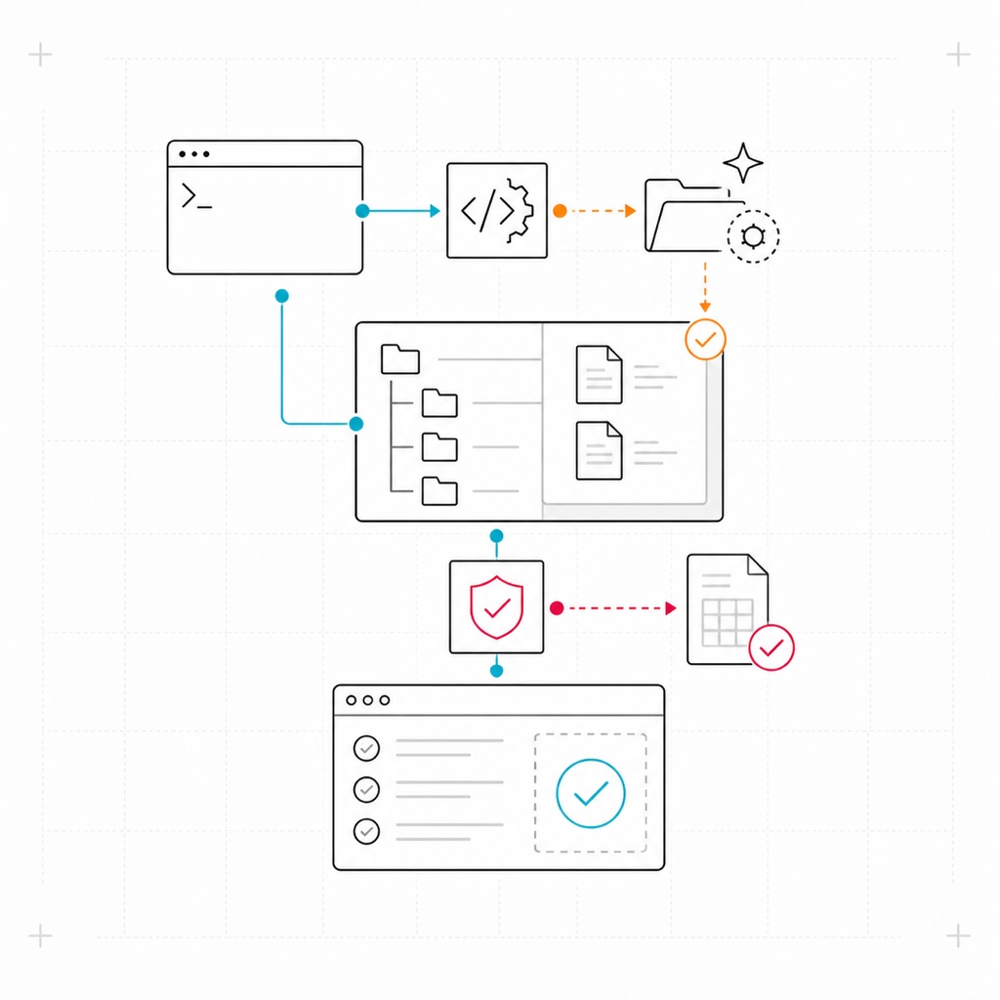
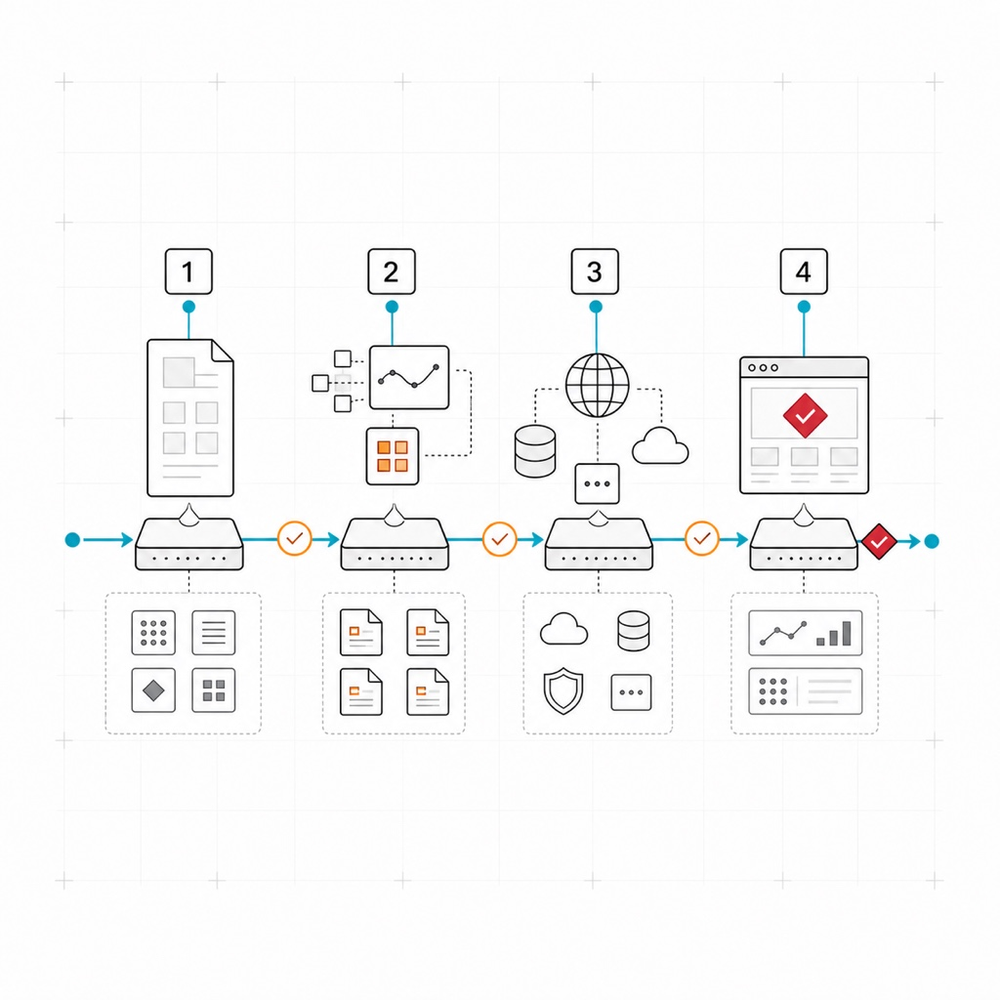
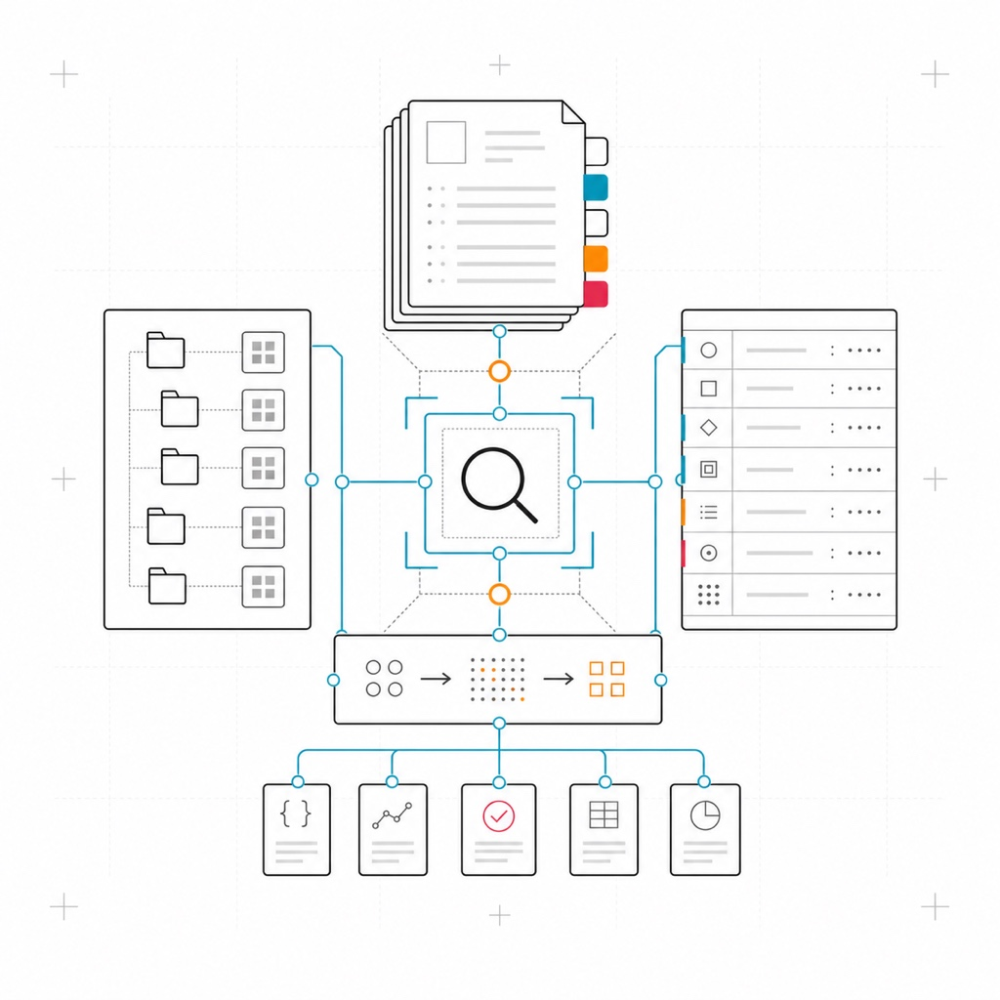
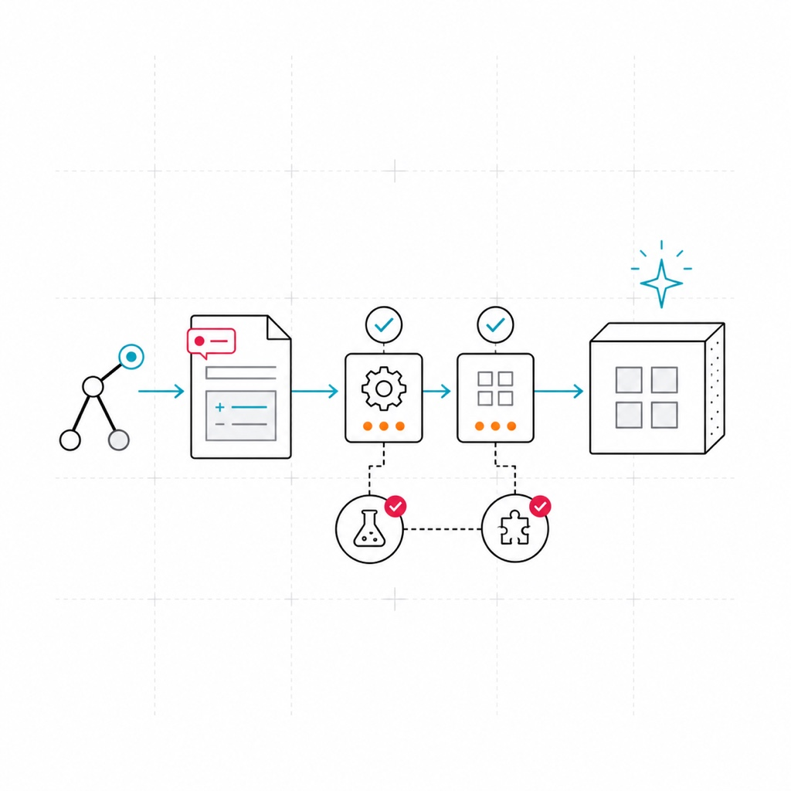
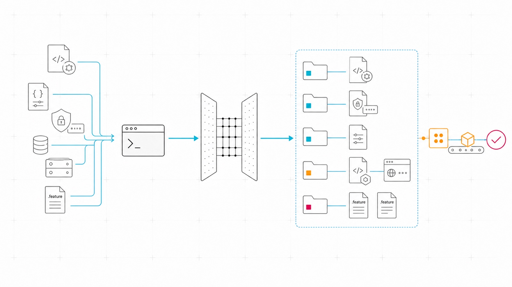
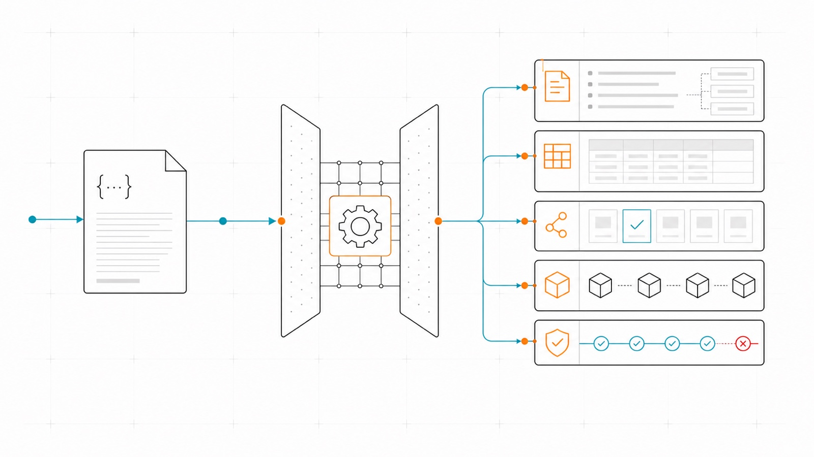
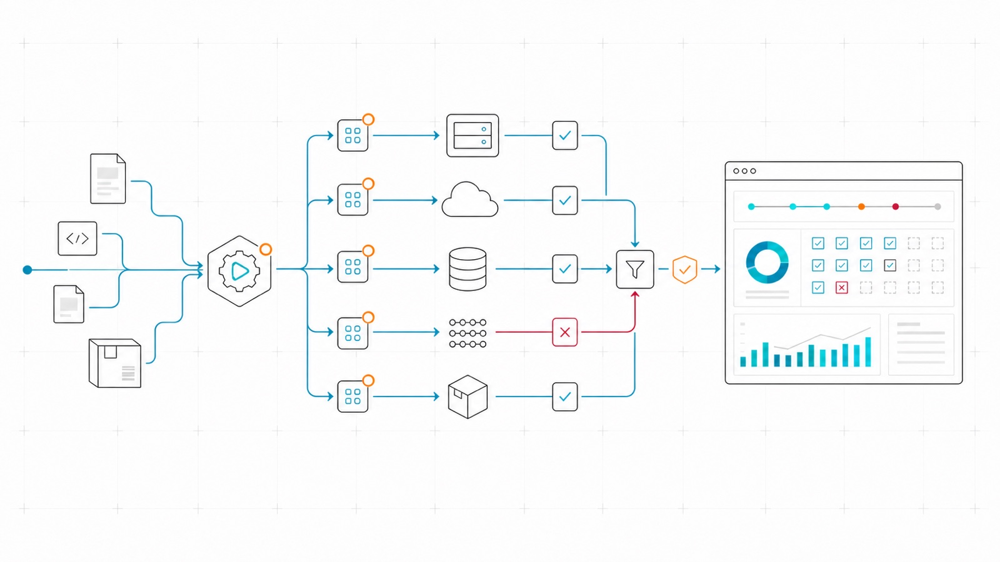

Yes. Karate Tools is distributed under the Apache 2.0 License: you can use, modify and distribute it, including in commercial applications.
Karate Tools is a toolkit for teams testing REST APIs with Karate. It scaffolds a new Karate module from a Maven archetype, generates test scenarios, data sets and mocks straight from an Open API definition, and ships ready-to-use clients for the databases and messaging systems your tests need to talk to.
-
One archetype, one command — a working Karate project, configured and ready to run.
-
Tests you don’t have to write — Open API in, Gherkin scenarios and mocks out.
-
Clients included — JDBC, MongoDB, Kafka and JMS, ready to use in tests.
Get started

Start here
Scaffold a module and run your first test.

Tasks
Step-by-step guides for scaffolding, generation, clients and execution.

Look it up
Configuration properties, exact and complete.

Community
Report bugs, improve the docs, or contribute code.
Key capabilities

Generate a fully-configured Karate module from a Maven archetype — Karate config, logging, authentication and mock-server wiring already in place.

Point the generator at an Open API definition and get Gherkin scenarios, test data and service mocks back — no scenario written by hand.

Run against any environment, with a mock server for external services and HTML reports that show exactly what ran.
Frequently asked questions
Have more questions? Open an issue — we’ll respond as quickly as possible.
Is Karate Tools free and open source?
Do I need an Open API definition to use Karate Tools?
No. The Open API generator is optional — the archetype gives you a working Karate project either way; the generator just saves you from writing scenarios, test data and mocks by hand when a definition exists. See Open API generator.
Do I need to write Java to use Karate Tools?
Mostly no — tests are plain Karate .feature files and YAML/JS
configuration. Java is only involved if you extend the clients or
generators themselves. See the quickstart.
Can I use Karate Tools outside InditexTech?
Yes — Karate Tools is public open-source software, usable by anyone under the Apache 2.0 License.